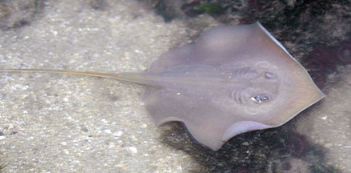
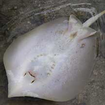
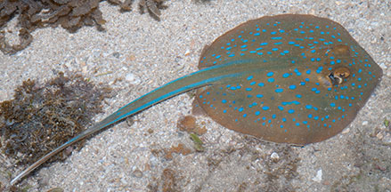
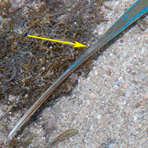
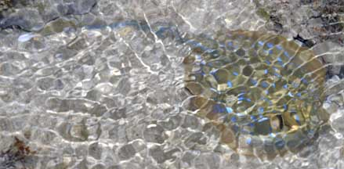
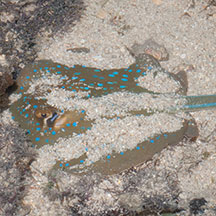
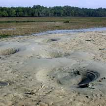
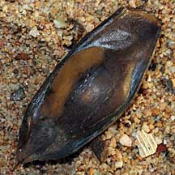
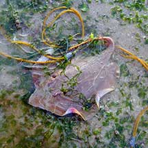
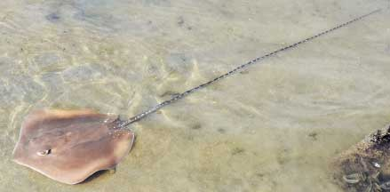

|
|
| fishes text index | photo index |
| Phylum Chordata > Subphylum Vertebrate > fishes > Order Rajiformes |
| Stingrays Family Dasyatidae updated Sep 2020
Where seen? Like strange 'flying' saucers with bulbous eyes and long whip-like tails, these fishes are often seen in our mangroves and coral reefs. They can sting painfully! These fishes often hide in silty bottoms and under coral ledges, watch where you step and where you put your hand. What are stingrays? Stingrays belong to the Family Dasyatidae. According to FishBase: the family has 9 genera and 70 species. Together with skates and rays, stingrays belong to the Order Rajiformes. These fishes are related to sharks but most are adapted for hunting and living on the sea bottom. They have flattened bodies with enlarged pectoral fins. Features: The largest species of stingrays can grow to 4m in diameter. Those commonly seen on our shores are much smaller. Like other rays, stingrays have greatly enlarged pectoral fins along their body edges. With graceful undulations of these fins, they seem to 'fly' through the water. They generally swim slowly, but can make a quick dash if they need to. They also flap the enlarged fins to bury themselves in the sand in an eyeblink. Stingrays have no or indistinct dorsal fins. They have long whip-like tails but lack tail fins. Their bulbous eyes stick out above the flat body, allowing them to peer out when they lie buried in the sand. Rays are closely related to sharks. Like sharks, the skeleton of a stingray is made of flexible cartilage. If you want to know how cartilage feels like, your nose and ears are made of cartilage! The stingray's flat teeth are also made of cartilage but are strong enough to crush clam shells. This is because the teeth are stiffened and braced with struts of different types of cartilage. |
 Swimming. Pulau Sekudu, May 04 |
 Underside.Pulau Sekudu, May 04 |
|
| Living close to the silty or sandy bottom, stingrays have a different
way of taking in water to breathe. To avoid sucking in mud and sand,
water is taken in from the upperside of the body through holes called
spiracles. These holes are found just beside their eyes. The water
is then expelled through five pairs of gill slits on the underside
of the body. Sometimes mistaken for a horseshoe crab and visa versa. In murky waters, these two different animals do have a similar profile, both being round and flat with a long tail. Other similarly shaped fish include the Electric ray. |
 St. John's Island, Aug 08 |
 Spine near the end of the tail. |
|
Most stingrays have one spine (some may have up to four spines), often
near the base of the tail (where the tail joins the body). Stingrays
don't sting with the tip of the tail. These spines are serrated and
can cut deeply and introduce venom into the wound that can cause excruciating
pain. These spines are used to protect themselves and not to hunt
prey. They can replace lost spines.
|
 Hard to spot under rippling water. Terumbu Raya, May 10 |
 May be half buried in sand. Sisters Island, Jul 07 |
|
| What do they eat? Most rays are
well adapted for bottom-dwelling. Their flattened body allows them
to hover close over the bottom like a vacuum cleaner. The mouth is
on the underside to forage for buried bivalves, crabs and worms. These
are crushed and ground up with blunt teeth. How do they hunt for prey? The snout may function as an electroreceptive organ, sensitive to electric charges of prey buried in the ground. Once they find signs of an edible titbit in the sand, they may expose the buried prey by blowing a jet of water from the mouth. They may also flap their enlarged pectoral fins to dig up large shallow holes in sand or mud. On some of our shores such as Chek Jawa, such 'craters' are often seen on the sand bar. |
 'Craters' left behind by feeding stingrays? Chek Jawa, May 02 |
 An egg case laid by a shark or a ray. Sentosa, Jun 08 |
 Often seen trapped in fishing nets. Changi, Jul 11 |
| Baby rays: Stingrays practice
internal fertilisation. Males have a pair of claspers near the pelvic
fins with grooves to introduce the sperm into the female. Stingrays
give birth to live, fully developed young. Human uses: Stingrays are a popular seafood dish in Singapore. The large pectoral fins are barbequed and served with chilli, often on a banana leaf. You can see their cartilageous bones as you eat the flesh. The Blue-spotted fantail ray (Taeniura lymma) is also popular in the live aquarium trade although it does not do well in captivity. Stingrays are often seen among the fishes trapped in abandoned fishing nets and traps on our shores. |
| Some Stingrays on Singapore shores |
 Whitespotted whipray (Himantura gerrardi) Tanah Merah Ferry Terminal, Jun 22 Photo shared by Loh Kok Sheng on facebook. |
| Family
Dasyatidae recorded for Singapore from Wee Y.C. and Peter K. L. Ng. 1994. A First Look at Biodiversity in Singapore. *from Lim, Kelvin K. P. & Jeffrey K. Y. Low, 1998. A Guide to the Common Marine Fishes of Singapore. ^from WORMS +Other additions (Singapore Biodiversity Records, etc)
|
Links
|